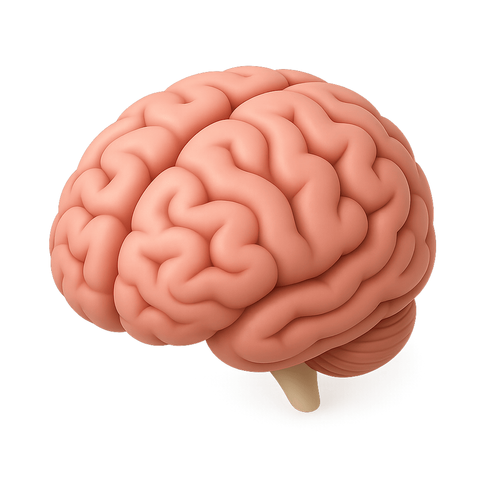
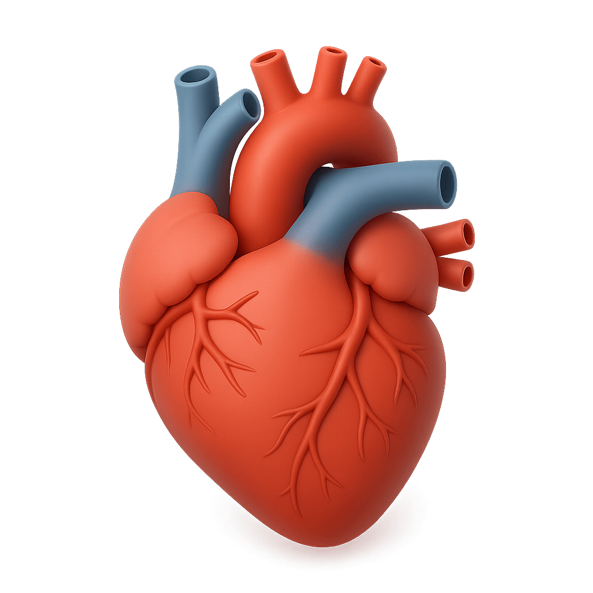
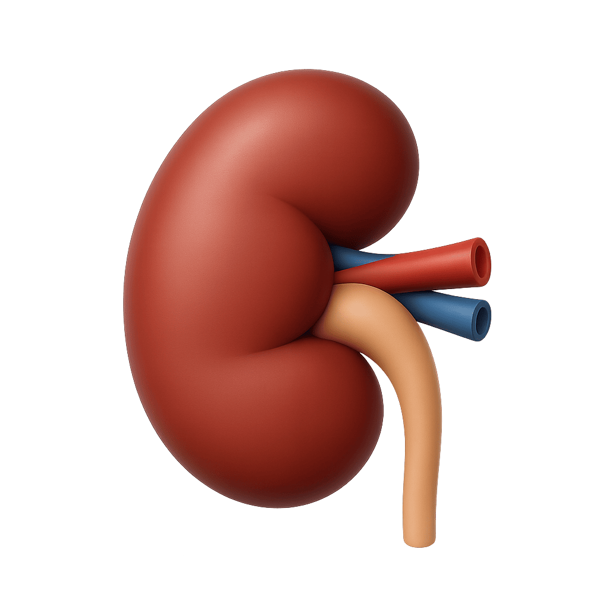
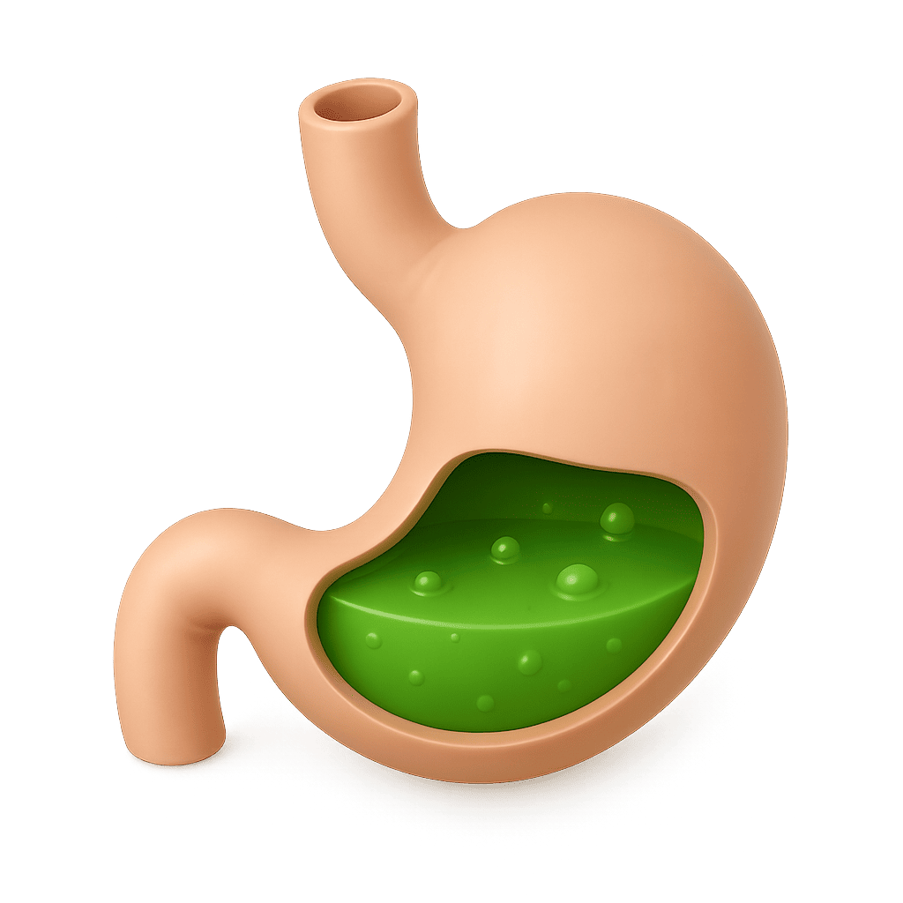

Explore Human Organs with a Fun & Educational Scratch Card Game
We’re thrilled to introduce a brand-new learning module on Teachings.AI: the Human Organs Scratch Card Game! Designed for children ages 5–10, this interactive experience makes learning about the body fun, engaging, and memorable.
Each card starts blank — just like a mystery waiting to be solved. Kids scratch the surface to reveal a vivid image of a major organ, hear its name pronounced clearly, and get a simple, easy-to-understand explanation of its function. From the pumping heart to the thinking brain, every reveal is a step deeper into the amazing world within us.
📸 What You’ll Discover




Reveal and learn: Brain, Heart, Lungs, Liver, Kidneys, Stomach & more!
🧠 The Brain – Your Body’s Control Center
Scratch to reveal the brain — the command hub of your body! Kids learn how the brain controls thoughts, memory, emotions, and movement. Fun fact: your brain has over 100 billion nerve cells!
Learning Focus: Thinking, memory, senses, nervous system
❤️ The Heart – The Powerhouse That Keeps You Going
Uncover the heart and discover how it pumps blood through your body 24/7. Kids will love learning that your heart beats about 100,000 times a day!
Learning Focus: Circulatory system, blood flow, heart rate
🫁 The Lungs – Breathe In, Learn Out
Reveal the lungs and explore how they help you breathe in oxygen and breathe out carbon dioxide. A perfect intro to respiration and healthy habits like exercise and clean air.
Learning Focus: Respiratory system, breathing, oxygen exchange
👉 The Liver – Your Body’s Natural Filter
Discover the super-organ that cleans your blood, stores energy, and helps digest food. The liver can even regenerate itself — a true superhero of the body!
Learning Focus: Digestion, detoxification, metabolism
👉 The Kidneys – Nature’s Cleanup Crew
Scratch to reveal the kidneys and learn how they filter waste and balance fluids. Did you know they process about 200 quarts of blood every day?
Learning Focus: Excretory system, hydration, waste removal
💡 Stomach & Intestines – The Digestive Duo
Explore how food travels from mouth to stomach and through the intestines. Kids learn about digestion, nutrients, and the role of gut health in feeling great.
Learning Focus: Digestive system, nutrition, food breakdown
💡 More Amazing Organs to Explore
The fun doesn’t stop there! The game also covers:
- Eye – How we see the world
- Teeth – Chewing and oral health
- Muscle – How we move and stay strong
- Lymph Node – Part of the immune system
- Uterus – A key organ in human reproduction (explained in age-appropriate terms)
All explanations are simple, science-based, and child-friendly.
Why Kids Love the Human Organs Scratch Game
- 🎁 Interactive Discovery – The scratch mechanic turns learning into a surprise-filled adventure.
- 🧠 Science Made Simple – Complex organ functions explained in easy, relatable terms.
- 👂 Audio Support – Hear each organ’s name and description for better understanding and pronunciation.
- 📱 No Login, No Ads, No Download – Play instantly on any device — perfect for home or classroom.
- 📘 Curriculum-Aligned – Supports early science standards in anatomy and biology.
At Teachings.AI, we believe that curiosity is the heart of learning. Our Human Organs Scratch Card Game transforms abstract biology into a hands-on, visual, and joyful experience. Whether your child dreams of being a doctor, scientist, or just loves to know how things work, this game sparks lifelong interest in health and science.